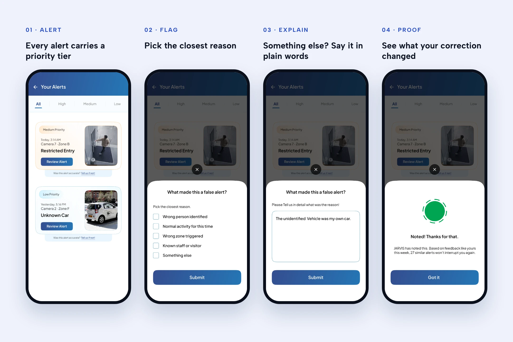
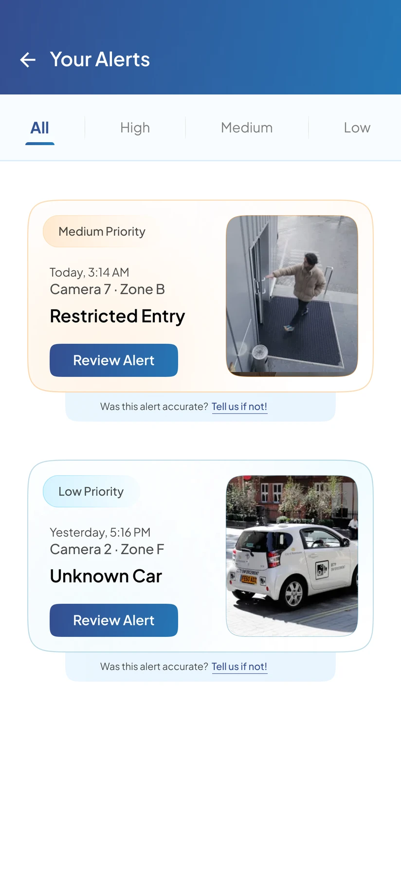
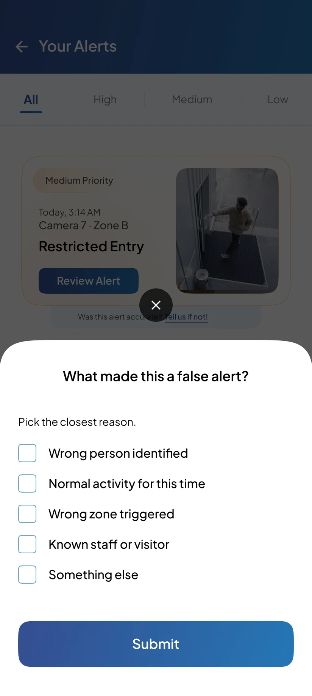
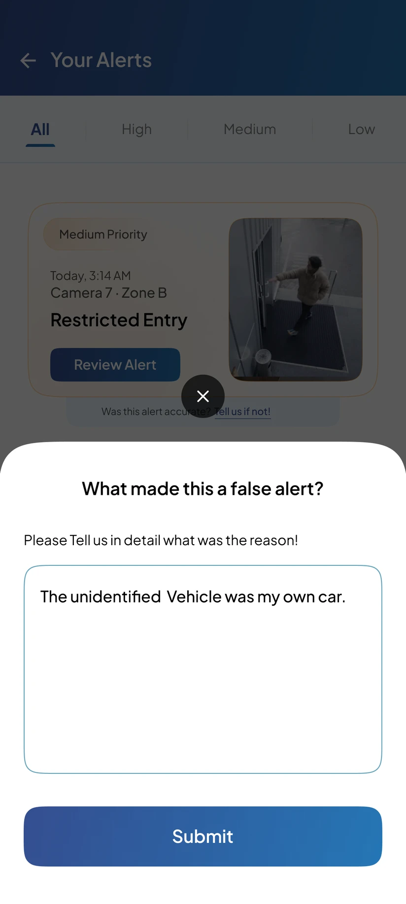
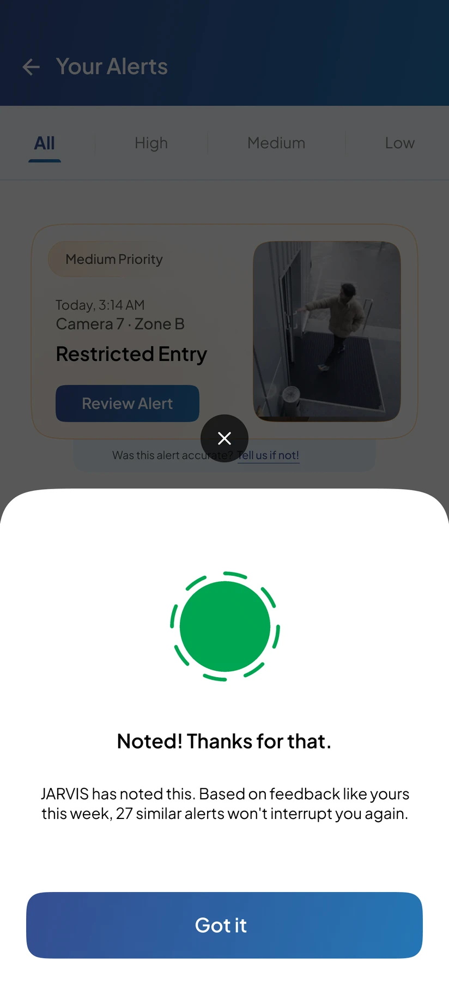

The hardest call
The false alert wasn’t the problem. The silent dismiss was.
The obvious brief is “fewer false alerts”. But that’s a model problem, and no screen I design retrains a model.
So I looked at what happens after a false alert lands. Someone opens it, sees their own car or their own night guard, and swipes it away. And then nothing. No sign the swipe counted. Tomorrow the same camera fires the same alert, and the system looks exactly as dumb as yesterday, even if it’s quietly getting better.
That’s where I spent the design. Not on another filter screen, but on making every correction visible.
A system can be improving and still lose your trust, if you never see it improve.
My first idea was a smarter filter screen, where people could mute a camera or switch off a detection type. I dropped it in the first hour. Muting hides the noise from one person and teaches the system nothing.
Who this is for
The person holding the phone at 3:14 AM
JARVIS turns a business’s existing CCTV into alerts: a retail store, a warehouse, a factory floor. Those alerts land on a phone. The person holding it is usually not a security analyst in a control room. It’s a store manager or a site head with a dozen other jobs.
At 3:14 AM their phone says Restricted Entry, Camera 7, Zone B. At 5:16 PM the next day it says Unknown Car, Camera 2, Zone F. It’s their own car. After a week of that, they stop opening alerts. And the one that matters arrives looking exactly like the dozens that didn’t.
Industry figures, not Staqu’s: The Monitoring Association and CSAA data as cited by Actuate (2026), and a study of 42 video operators in Applied Ergonomics as cited by Security Journal Americas (2026). Client count from staqu.com.
The store manager at 3 AM is my own picture of the user, built from the brief and from Staqu’s site, which sells JARVIS to retail stores, warehouses and factories. I didn’t get to talk to a real customer in the time I had.
What I found
Three reasons good alerts get ignored
Generic models, specific sites
A model trained on generic footage meets a store under neon at 8 PM and a warehouse at 4 AM. The problem isn’t that thresholds exist. It’s that tuning them for every site is ongoing work nobody on site has time for.
The invisible correction
When someone dismisses a false alert, does anything tell them it counted? If not, the feedback loop can work perfectly and still be invisible. Trust never builds, even while accuracy does.
Every alert looks the same
A forklift in the wrong lane and a stranger at the back door arrive with the same weight. When everything is urgent, nothing is.
Only alert me when something actually happens.
Stop customers churning out of frustration, keep the ones already wavering, and build a system that gets better on its own, so support load drops instead of rising.
The options
I had three answers. I built the one that lives inside the alert.
Option 01 won because it works inside the moment people already live in: the alert itself. No setup screen, no report to remember to open. It’s also the most practical of the three: it ships on top of the alert feed that already exists, with no new setup screen and no new product to sell. And it quietly feeds the other two. More on that in the screens.
Most camera apps I looked at let you snooze a camera or turn off a detection type. Almost none tell you whether dismissing an alert taught the system anything. That gap is where option 01 sits.
The flow
Three taps from annoyance to proof
Tap “Tell us if not” under any alert. Pick the closest reason, or write your own. Submit. JARVIS answers straight away with what your correction changed. The whole loop happens on top of the alert feed, so nobody loses their place.

- 01 · Alert
Every alert carries a priority tier

- 02 · Flag
Pick the closest reason

- 03 · Explain
Something else? Say it in plain words

- 04 · Proof
See what your correction changed

The screens
Four screens, one promise: your correction counts
Not every alert gets the same voice
Alerts are tiered High, Medium and Low, both as filters along the top and as a coloured tag on every card: warm for Medium, cool for Low. The camera still sits on the card, so a glance is often enough to judge. And the way to say “this was wrong” isn’t hidden in a menu. “Was this alert accurate? Tell us if not!” sits under every single alert.
What made this a false alert?
Five reasons, and each one points the model at a different fix. Wrong person identified is a recognition error. Normal activity for this time is a time rule. Wrong zone triggered is a zone rule. Known staff or visitor is an allow list. This is where option 02 sneaks back in: every tap collects the zone and time rules nobody would ever sit down and configure.
Something else? Say it in plain words
Reasons can’t cover everything. “The unidentified vehicle was my own car” is exactly the kind of context a camera can’t see and a person knows instantly. Free text comes second, never first, so the quick path stays quick.
Noted. And here’s what it changed.
This is the screen the whole concept exists for. “JARVIS has noted this. Based on feedback like yours this week, 27 similar alerts won’t interrupt you again.” Not “thanks for your feedback” into the void. A number, tied to your correction, that you can hold the system to. And “feedback like yours” makes it a team effort: everyone on the site teaches the same JARVIS.
Try it
Flag a false alert yourself
Tap “Tell us if not” under an alert to start.
Loading the prototype
Open in FigmaWhat I’d change
Built in a day, so here’s what I’d fix on day two
The tiers lost their verbs.
My first sketch called them Act now, Review soon and FYI. The screens shipped as High, Medium and Low, which only say how loud an alert is, not what to do about it. I’d put the verb back on the tag.
Checkboxes under a “pick the closest reason” question.
The control says “pick many”, the copy says “pick one”. I’d switch to single select rows, since one clear reason is more useful to the model than three vague ones.
“27 won’t interrupt you again” is also a risk.
A real intruder can look a lot like your own car. Suppressed alerts shouldn’t vanish. They should drop into a quiet FYI queue you can check, with an Undo on the confirmation screen.
It’s mobile only.
The person who renews the contract is often a security head watching many sites from a desktop. That’s where the weekly noise report (option 03) belongs.
Trade offs
Every decision closed a door
Visible proof over silent learning
Showing the result of a correction is what builds trust.
What it costonce you promise a number, the model has to be able to back it.
Feedback on the card, not in settings
The correction lives where the frustration happens.
What it costone more line on every single alert.
Reasons first, free text second
Fast for the common cases, and structured enough for the model to use.
What it costthe list only covers the failures I could predict.
Tiers instead of mute
Nothing gets switched off, low confidence alerts just get quieter.
What it costLow alerts still arrive, so the feed never goes fully silent.
The alert moment over the setup screen
I designed for the person at 3 AM, not the admin configuring cameras.
What it costzone and time rules only build up slowly, one flag at a time.
What changed
The same Unknown Car, two different tomorrows
Unknown Car, Camera 2. It’s my car. I swipe it away. Nothing tells me that mattered. Tomorrow at 5:16 PM, same car, same alert, and I trust JARVIS a little less.
Tell us if not. Something else: “The unidentified vehicle was my own car.” Submit. JARVIS answers: 27 similar alerts won’t interrupt you again. Tomorrow at 5:16 PM, my phone stays quiet, and I know why.
The number I’d measure first is how often the same false alert comes back after someone has flagged it. Today that number is invisible, so nobody can tell whether flagging helps. If this design works, repeat alerts per camera fall every week.
Share of alerts actually opened, climbing back up because what’s left is worth opening. Share of false alerts that get flagged, which tells me the loop is easy enough to use at 3 AM.
Support tickets about false alerts, falling. Renewals from accounts that flag often against accounts that never do, because the first group can see JARVIS getting better and the second can’t.
What I learned
In B2B AI, trust is a UI problem before it’s a model problem
I came in thinking the job was to reduce false alerts. But the model can get better every week and the customer can still churn, because nobody on site ever sees it get better. The most valuable screen in this project isn’t a dashboard or a filter. It’s one sentence after you submit a correction.
Having one day also taught me something. I found the single screen that carries the idea, the Noted screen, and built everything else backwards from it. The tiers, the reasons, the free text all exist to earn that one sentence.